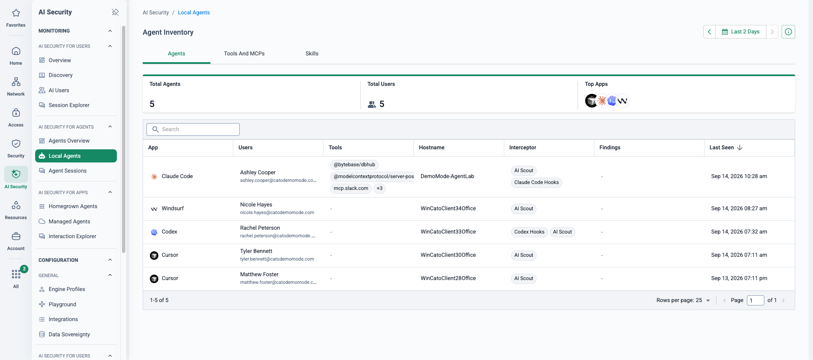
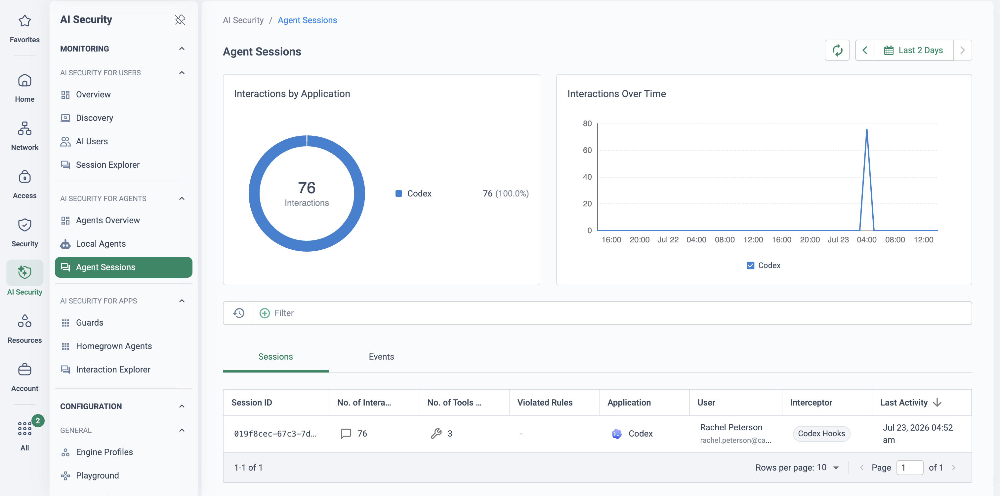
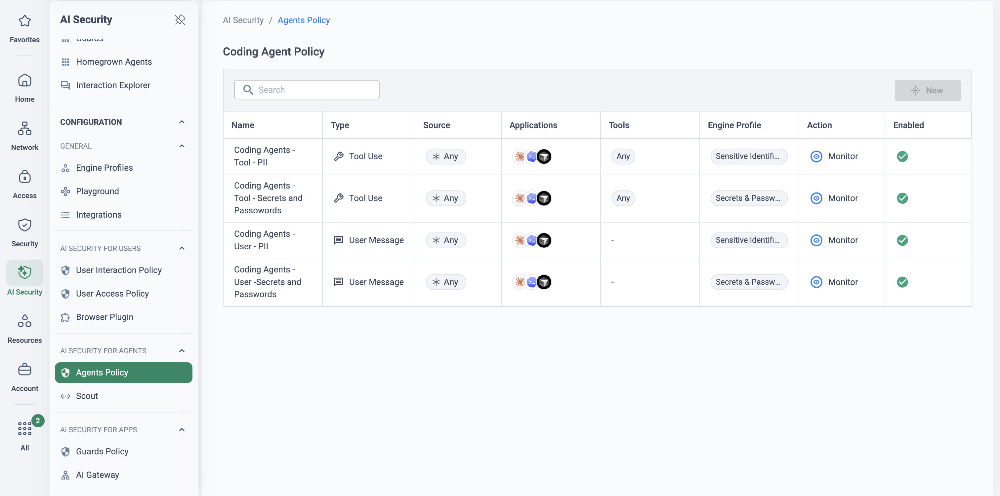
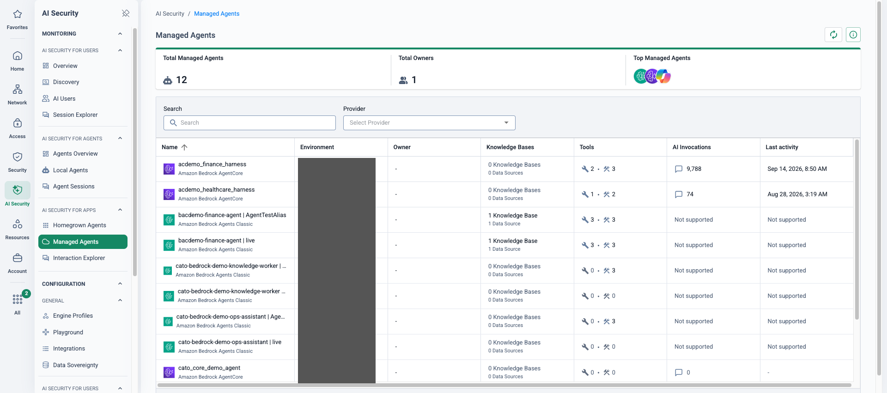

Why this matters
The GenAI conversation has moved on from chatbots. Coding agents commit code, SaaS copilot agents answer customers from CRM data, and customer-built agents chain tool calls against internal APIs — all autonomously, all with delegated credentials. A single request can trigger a sequence of actions no human reviews in the moment. Adoption is happening whether it is governed or not: developers install coding agents themselves, business teams build agents on low-code platforms, and engineering wires agent frameworks straight into production systems.
Cato classifies AI agents into three types, and the distinction drives how each is secured: local agents (typically third-party tools running on user endpoints, such as coding agents), managed agents (generally low-code or no-code agents built on cloud and SaaS platforms such as AWS Bedrock, Azure AI Foundry and Microsoft Copilot Studio) and custom agents (fully coded agents your teams build and run on endpoints or in cloud environments).
The objective: know every agent you run, see everything each one does, and govern what it is allowed to touch — without slowing the teams adopting it.
Agent sprawl, delegated permissions, machine-speed mistakes
Three problems compound each other. Sprawl — nobody has an inventory of the agents in use, their configurations or the MCP servers they connect to. Delegated identity — an agent acts with the permissions of the person who launched it: repo access, file systems, internal APIs, CRM data. Injection — an attacker who can influence what an agent reads can steer what it does next; with agents, the payload can arrive through a tool response, not just a prompt (published attacks such as EchoLeak and CurXecute targeted exactly this path against local and coding agents).
AI-specific attacks
Prompt injection, jailbreak attempts and multi-turn attacks that manipulate agent behaviour — including indirect prompt injection, where a malicious payload in a tool's output hijacks the agent's actions.
Data exfiltration
Agents with access to code repositories, internal APIs, CRM systems or file systems can leak source code, credentials, personal identifiers or financial data through tool calls or model outputs.
Shadow agents
Unmanaged agents installed without IT approval — including personal instances of coding assistants running without enterprise licences or security controls — create blind spots in security posture.
MCP server risks
Malicious or misconfigured MCP servers can expose sensitive data, execute unauthorised commands, or introduce vulnerabilities into the agent's workflow.
Compliance violations
Failure to meet regulatory requirements for AI systems, such as the EU AI Act, or internal policies governing code generation, data handling and automated decision-making.
Governance gaps
No visibility into which agents are deployed, what tools they connect to and what data they can access — making consistent security policy across the organisation impossible.
“How many AI agents are running in your environment right now — on developer laptops, in Copilot Studio, in your own code — and could you show me the last thing each one did with the permissions it was given?”
Where this sits in the Cato SASE platform
- Scout scans developer endpoints for local coding agents, their configuration and connected MCP servers.
- Managed agents on Bedrock, AI Foundry and Copilot Studio are discovered and traced through platform APIs.
- Custom agents send LLM calls through the AI Firewall proxy; Guards inspect prompts, outputs and tool calls.
- Every session is recorded in Agent Sessions with violations tagged inline; Local Agents holds the inventory.
Discover, observe, govern — every agent type
AI Security for Agents gives one workflow across all three agent types: build the inventory, trace what each agent actually does, and enforce policy at the moment of action. Every interaction is evaluated at four inspection points — user prompts, model outputs, tool calls and tool messages — so an injected instruction hiding in a tool response is caught just like a malicious prompt. Detections cover prompt injection, jailbreak attempts, sensitive data exposure and policy violations, and the same Guards and policy engine protect local, managed and custom agents alike.
Complete agent inventory
Scout scans endpoints for installed agents, configurations, licence types and connected MCP servers; managed platforms are discovered via API; custom agents become visible the moment they connect through the AI-FW.
Four-point runtime inspection
Prompts, outputs, tool calls and tool messages are all inspected — catching indirect prompt injection arriving through tool responses, which chat-only controls never see.
Policy at the moment of action
Agent Policy governs what users may send to coding agents, which tools and MCPs agents may use, and what happens on a match — block or redact sensitive data and credentials in real time.
Session-level audit evidence
Every prompt, response and tool call is recorded as a session with violations tagged inline — step-by-step evidence for incident investigation, blast-radius analysis and compliance.
How each agent type is secured
Local agents endpoint
- Scout scans developer workstations (macOS, Windows, Linux) for installed AI coding tools — no TLS inspection, proxy or browser extension required; deployed as a script via MDM (Intune, Jamf, Kandji), run on a schedule.
- Agent Controls surface agent events — user messages, tool calls, tool responses, MCP interactions — for evaluation by Agent Policy.
- Discovery covers Claude Code, Cursor, Codex, Copilot, VS Code, JetBrains IDEs, Windsurf and more; agent controls today for Claude Code, Cursor and Codex.
- Runtime protection blocks or redacts sensitive tool calls and stops indirect prompt injection in tool responses before it reaches the agent.
Managed agents platform
- Cato connects via API to platforms such as AWS Bedrock, Azure AI Foundry and Microsoft Copilot Studio and auto-discovers every deployed agent.
- Inventory captures each agent's name, purpose and instructions, connected tools and connectors, knowledge bases and data sources, and assigned permissions.
- Platform tracing data — prompts, responses, tool invocations and results — streams into the Agentic AI dashboard in real time.
- Traced invocations feed the AI Firewall for the same four-point inspection; threats can be alerted, logged or blocked depending on integration and enforcement mode.
Custom agents coded
- Agents built with LangChain, the OpenAI Agents SDK or direct LLM API calls connect to the AI-FW at SDK level: redirect the LLM base URL to the AI-FW proxy endpoint and add an authentication header.
- The AI-FW sits transparently in the request path, proxying to the original provider — no changes to the agent's core logic.
- Every invocation is traced as a session: full conversation history, tool calls with parameters, tool responses and final output.
- Guards enforce protection against injection, jailbreaks and sensitive-data leakage; policies are configured centrally and applied to all connected custom agents.
Two monitoring lenses
Monitoring splits into two complementary views: Local Agents for inventory and posture (what exists, who runs it, what it can reach) and Agent Sessions for runtime behaviour (what it actually did, and whether policy intervened). A typical investigation starts in Local Agents — an agent with a suspicious MCP server configuration — then pivots to Agent Sessions to review its runtime activity.
| Question you're answering | Use this view |
|---|---|
| What agents are installed across my endpoints? | Local Agents |
| Which MCP servers are connected to my agents? | Local Agents |
| Which users are running unapproved agents? | Local Agents |
| What did this agent do during a session? | Agent Sessions |
| Did any agent trigger a violation? | Agent Sessions |
| Was sensitive data exposed through a tool call? | Agent Sessions |
What this looks like live


What this looks like live
![CMA AI Security → Agents Overview dashboard for last month: interceptor Claude Code Hooks, 10 active users, 2 applications, a funnel to 3.38k total interactions split into 3.33k allowed and 57 blocked; Top Usage bubble chart dominated by Claude Code at 3.25k; Violation Breakdown donut of 83 violations led by Block PII in Coding Agents – Secrets & Passwords, two demo rules blocking unsanctioned or unclassified MCPs, and a monitor-mode sensitive-data rule; High Risk Skills table listing planning-with-files, commit, commit-push-pr, summarize-changes and ai-integration-phase with finding counts; Top Users bar list; Top MCPs table with Atlassian Remote and cato-cli-mcp marked Sanctioned alongside unclassified servers](../assets/img/cma-ai-agents-overview.png)

execute_sql is the edge worth pausing on, and the “+5 more tool groups /
+29 total tools” expanders show the surface keeps going. This is discovery output, not
policy: what the agent can touch, mapped before any control exists.

